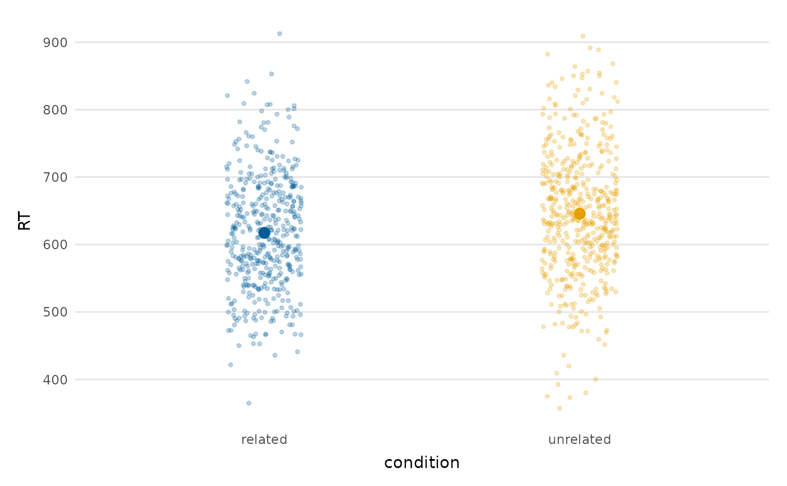
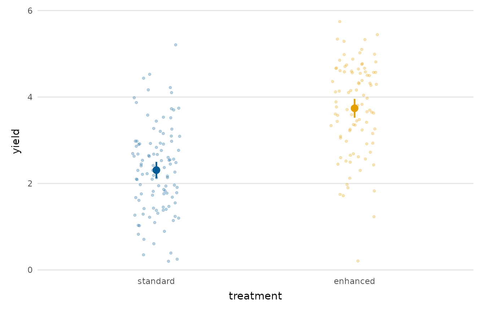
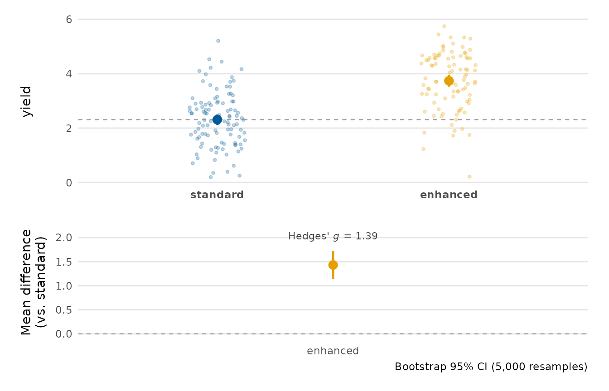

Compare group means with confidence intervals
Source:R/distributions_extra.R
group_comparison_plot.RdAn estimation-style plot of a numeric outcome across the levels of a grouping variable: each group's mean with a confidence interval, over a backdrop of the raw (jittered) data. By showing both the estimate and its uncertainty, it conveys whether the groups differ more faithfully than a bar chart does.
Usage
group_comparison_plot(
data,
y,
group,
conf_level = 0.95,
show_points = TRUE,
point_alpha = 0.25,
differences = FALSE,
reference = NULL,
n_boot = 5000,
palette = NULL,
title = NULL,
x_lab = NULL,
y_lab = NULL
)Arguments
- data
A data frame.
- y
The numeric outcome (string or unquoted name).
- group
The grouping variable (string or unquoted name).
- conf_level
Confidence level for the intervals (t-based).
- show_points
Whether to draw the raw data behind the means.
- point_alpha
Transparency of the raw points.
- differences
If
TRUE, append a lower panel showing the pairwise mean difference(s) against a reference group, each with a bootstrap confidence interval, turning the plot into a full estimation plot viaestimation_plot(). The return value is then a 'patchwork' object. Defaults toFALSE(the plain group-means plot, fully backward-compatible).- reference
Reference group for the difference panel when
differences = TRUE; defaults to the first level ofgroup. Ignored otherwise.- n_boot
Number of bootstrap resamples for the difference intervals when
differences = TRUE. Ignored otherwise.- palette
Colours for the groups; defaults to
depictr_palette().- title, x_lab, y_lab
Title and axis labels.
Value
A ggplot2::ggplot object, or a 'patchwork' object when
differences = TRUE.
Details
A group with a single observation has no degrees of freedom for a t-based interval, so only its mean is drawn (no interval) and a warning is issued.
Examples
group_comparison_plot(lexical_decision, RT, condition)

group_comparison_plot(crop_yield, yield, treatment)

# Append the pairwise mean-difference panel (an estimation plot):
set.seed(1)
group_comparison_plot(crop_yield, yield, treatment, differences = TRUE)
